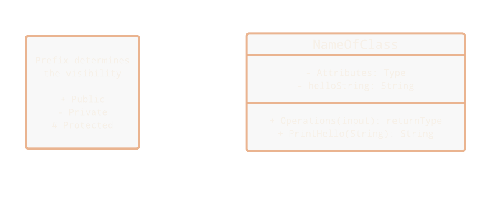

Documentation (click me)
Git Definitions
COMMIT: Saves your changes locally. When you eventually push, these saved versions are what get sent to the server.
STAGE: The "holding area." It acts as a selector so you can choose exactly which files you want to include in your next commit.
HTTPS vs SSH
HTTPS: Put in your login details every time you make a push or pull
SSH: Requires a generated key. More setup early for less passwords later
Git Commands
Link Through SSH Generate Key, Copy it, Add to gitlab, Verify.
[pcname@pcuser java]$ ssh keygen -t ed25519 -C "your_email@example.com"
Enter file in which to save the key (/home/youruser/.ssh/id_ed25519):
Enter passphrase (empty for no passphrase): (Not Required)
[pcname@pcuser java]$ eval "$(ssh-agent -s)"
Agent pid 1234
[pcname@pcuser java]$ ssh-add ~/.ssh/id_ed25519
Identity added: /home/youruser/.ssh/id_ed25519 (your_email@example.com)
[pcname@pcuser java]$ cat ~/.ssh/id_ed25519.pub
ssh-ed25519 AAAAC3NzaC1lZDI1NTE5AAAAIB... your_email@example.com
Then copy all of this^
git status Shows untracked/modified files example
[pcname@pcuser java]$ git status
git status On branch main
Your branch is up to date with 'origin/main'.
Changes to be commited:
modified: src/main/java/Spagetthi
Changes not staged for commit:
(use "git add file..." to update what will be committed)
(use "git restore file..." to discard changes in working directory)
modified: src/main/java/Virus
modified: src/main/java/SkuxDelux
git pull origin Pull's all the updates from git(use git fetch to see others commits)
[pcname@pcuser java]$ git pull origin
Username for 'https://eng-git.canterbury.ac.nz': (your Username)
Password for 'https://cwi184@eng-git.canterbury.ac.nz': (your Password)
git commit (filename) -m "Your Message" Record your changes with a descriptive note (use -a -m to add at the same time)
[pcname@pcuser java]$ git commit (filename) -m "Your Message"
[main b4738d7] Your Message
1 file changed, 69 insertions(+), 67 deletions(-)
git add (filename) Adds a specific file to the stage.
[pcname@pcuser java]$ git add SkuxDelux
......
Great Success!
After checking status again...
Changes to be commited:
modified: src/main/java/Spagetthi
modified: src/main/java/SkuxDelux
Changes not staged for commit:
modified: src/main/java/Virus
git push origin Push's all on stage to online repo (use push origin --dru-run to test)
[pcname@pcuser java]$ git push origin
Username for 'https://eng-git.canterbury.ac.nz': (your Username)
Password for 'https://cwi184@eng-git.canterbury.ac.nz': (your Password)
Enumerating objects: 17, done.
Counting objects: 100% (17/17), done.
Delta compression using up to 4 threads
Compressing objects: 100% (7/7), done.
Writing objects: 100% (9/9), 2.05 KiB | 2.05 MiB/s, done.
Total 9 (delta 3), reused 0 (delta 0), pack-reused 0 (from 0)
To https://eng-git.canterbury.ac.nz/seng201-2026/team-10.git
74f0cf1..7f72701 main -> main
Terminal Commands
ls List Directory: Shows all files and folders in your current location.
cd (folder) Change Directory: Move into a folder, or use cd .. to go up one level.
--help Add this after any command to see its manual and options.
Copy/Paste:
Ctrl + Shift + C / Ctrl + Shift + V
History: Use the
Up Arrow to cycle through previous commands.
UML Diagrams
A Basic Class


Realization: Dashed line with hollow arrow - A class implements an interface, agreeing to provide its behavior. Example: A CreditCardPayment implements PaymentMethod.
Generalization: Solid line with hollow arrow - An inheritance relationship where a subclass extends a superclass. Example: A Dog is an Animal.
Aggregation: Solid line with hollow diamond - A whole-part relationship where parts can exist independently of the whole. Example: A Team has Players (players still exist if the team is disbanded).
Composition: Solid line with filled diamond - A strong whole-part relationship where parts cannot exist without the whole. Example: A House has Rooms (rooms don’t exist without the house).
Dependency: Dashed line with arrow - A temporary usage relationship where one element depends on another. Example: A Printer uses a Document to print.